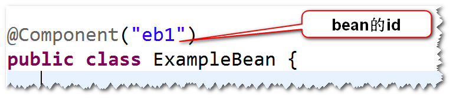
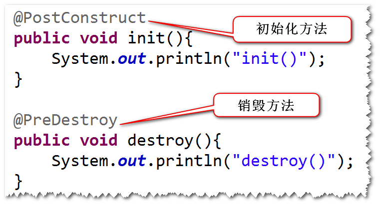
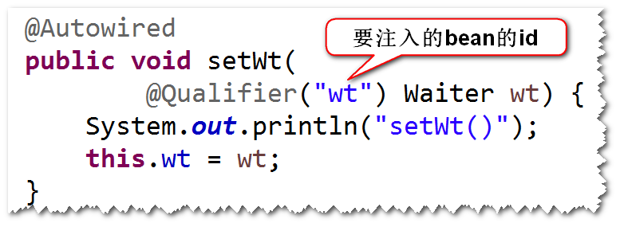
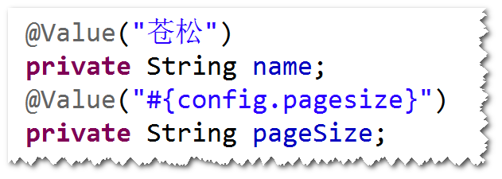

容器启动之后，如果发现配置文件有component-scan元素， 则容器会扫描相应的包及其子包下面的所有的类，如果这些 类前面有一些特殊的注解(比如@Component),则容器会将 这些类纳入容器进行管理（相当于以前配置文件当中有相应的 bean元素)。
(2) 编程步骤。
step1. 在配置文件当中，添加component-scan元素。

step2. 在类名前，添加一些注解。

注：bean的默认id是首字母小写之后的类名。
@Component 通用
@Service 业务层
@Repository 持久层
@Controller 控制层
(3)生命周期相关的两个注解:
@PostConstruct 初始化
@PreDestroy 销毁

注：这两个注解来自于javaee,不属于spring框架。
(4)用于延迟加载的注解:
@Lazy(true) true表示延迟加载。
(5)用于指定作用域的注解:
@Scope("prototype")。

(6)依赖注入相关的注解
@Autowired 和 @Qualifier
a. 支持set方式的注入和构造器方式的注入。
b. set方式注入：
将@Autowired和@Qualifer加到set方法前面， 也可以加到属性前面。其中，@Qualifer用于指定 要注入的bean的id。
注：如果不指定id,则使用byType的方式来注入。

c. 构造器注入:
将@Autowired和@Qualifer加到构造器前面即可。

@Resource
a. 只支持set方式的注入。
b. 可以将该注解加到set方法前面，或者也可以加到 属性前。使用name属性来指定要注入的bean的id。

(7) spring表达式相关的注解

注：@value注解即可以用在属性前，也可以用在 set方法前。另外，也可以使用该注解注入基本类 型的值。